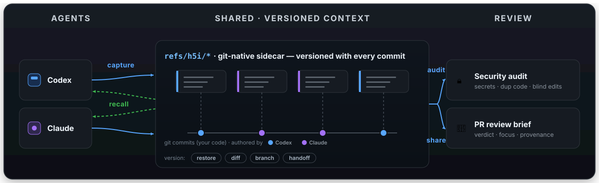

CONTEXT VERSIONING · AI PROVENANCE · OPEN SOURCE
Next-Gen AI-Aware Git
h5i (pronounced high-five) is a Git sidecar for teams where AI agents write code alongside humans. Git records what changed. h5i records the rest: who, why, what the agent knew, whether it was safe, and how the next agent picks up where the last left off.
curl -fsSL https://raw.githubusercontent.com/Koukyosyumei/h5i/main/install.sh | sh
DAG
VERSIONED REASONING
4
COMMAND GROUPS
PR
SHAREABLE UI
refs
GIT-NATIVE SIDECAR

Agents capture and recall the same versioned context through
refs/h5i/*; audits, dashboards, and PR comments are views over that shared record.